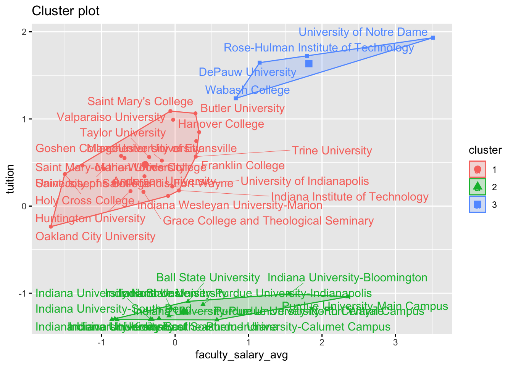

rm(list = ls())
library(tidyverse)
library(factoextra)
library(ggthemes)Problem Set #9
Part 1: Segmenting Colleges
Exercise 1
scale0 = function(x) {
(x - mean(x)) / sd(x)
}
colleges = read_csv("college.csv") %>%
filter(state == "IN") %>% #only schools in Indiana
column_to_rownames(var = "name") %>% #make college name into row name
select(faculty_salary_avg, tuition) %>%
mutate_all(.funs = scale0)Check for missing Values
sapply(colleges, function(x) mean(is.na(x)))faculty_salary_avg tuition
0 0 Cluster Plot
IN_cluster = kmeans(colleges,
centers = 3,
nstart = 25)
factoextra::fviz_cluster(IN_cluster, colleges, repel = TRUE)
Exercise 2
When it comes to two possible optimal values for k for the clustering problem from Exercise 1, I want to look at the values of 5 and 6. When using the kmeans total within sum of squares method, average silhouette width method, and the gap statistic method, we found possible values of: 3, 4, 5, 6, 7, and 9. We are already 3 in our above example and I do think that 9 is going to be too large. So I decided to go with the 4 and 6 since they were present in the group of the remaining values for the optimal number of clusters.
factoextra::fviz_nbclust(colleges, kmeans, method = "wss")factoextra::fviz_nbclust(colleges, kmeans, method = "silhouette")factoextra::fviz_nbclust(colleges, kmeans, method = "gap_stat")Exercise 3
Cluster Plot w/ kmeans of 4
kmean_cluster1 = kmeans(colleges,
centers = 4,
nstart = 25)
factoextra::fviz_cluster(kmean_cluster1, colleges, repel = TRUE)Cluster Plot w/ kmeans of 6
kmean_cluster2 = kmeans(colleges,
centers = 6,
nstart = 25)
factoextra::fviz_cluster(kmean_cluster2, colleges, repel = TRUE)Part 2: Segmenting the Cereal Market
Exercise 4
cereal = read_csv("Cereals.csv") %>%
column_to_rownames(var = "name") %>% #make cereal name into row name
select(-mfr, -type, -weight, -shelf, -cups, -rating) %>% # drop unwanted
drop_na() %>% # drop missing values
mutate_all(.funs = scale0)Rows: 77 Columns: 16
── Column specification ────────────────────────────────────────────────────────
Delimiter: ","
chr (3): name, mfr, type
dbl (13): calories, protein, fat, sodium, fiber, carbo, sugars, potass, vita...
ℹ Use `spec()` to retrieve the full column specification for this data.
ℹ Specify the column types or set `show_col_types = FALSE` to quiet this message.Check for Missing Values
sapply(cereal, function(x) mean(is.na(x)))calories protein fat sodium fiber carbo sugars potass
0 0 0 0 0 0 0 0
vitamins
0 Find Optimal Values for kmeans
fviz_nbclust(cereal, kmeans, method = "wss")fviz_nbclust(cereal, kmeans, method = "silhouette")fviz_nbclust(cereal, kmeans, method = "gap_stat")Exercise 5
Cluster Centers
cereals_cluster = kmeans(cereal,
centers = 6,
nstart = 25)
cereal = cereal %>%
mutate(cluster = cereals_cluster$cluster)
centers = cereals_cluster$centers %>%
as.data.frame() %>%
rownames_to_column(var = "cluster")
centers cluster calories protein fat sodium fiber
1 1 0.4857736 0.14236189 -1.655367e-01 0.55537739 -0.14126582
2 2 -0.1949785 0.25651585 -4.704728e-01 0.71858636 -0.15936428
3 3 0.9057181 0.62649700 1.179449e+00 -0.10030671 0.44331445
4 4 -2.2018711 1.38174776 -3.310734e-01 0.17279012 3.64131237
5 5 -1.2499969 -0.06420242 -8.828625e-01 -1.94150793 -0.02664224
6 6 0.1978117 -0.91996886 1.057355e-17 0.07498586 -0.66198437
carbo sugars potass vitamins
1 0.8831512 -0.1777369 -0.03781363 3.1822385
2 0.8538488 -0.8216795 -0.27605120 -0.1818422
3 -0.2678101 0.4913598 0.79253713 -0.2519272
4 -2.0718749 -0.7894824 2.98378133 -0.1818422
5 0.1551013 -1.0953551 -0.11227576 -0.8048201
6 -0.5913029 1.0020580 -0.72140960 -0.1818422ggplot(centers) +
geom_point(aes(x = scale0(sugars),
y = scale0(calories),
color = factor(cluster)),
size = 4.5) +
geom_vline(xintercept = 0, linetype = 'dashed', alpha = 0.7) +
geom_hline(yintercept = 0, linetype = 'dashed', alpha = 0.7) +
labs(title = "Calories vs. Sugar by Cluster Center",
x = "Sugars", y = "Calories") +
theme_classic()Exercise 6
Based on the location of the cluster centers in Exercise 5, we can give each cluster an intuitive name.
Cluster 1 is average calorie - above average sugar.
Cluster 2 is above average calorie - below average sugar.
Cluster 3 is high calorie - high sugar.
Cluster 4 is low calorie - below average sugar.
Cluster 5 is below average calorie - low sugar.
Cluster 6 is above average calorie - high sugar.
Part 3: Segmenting Bathsoap Customers
Exercise 7
bathsoap = read_csv("BathSoapHouseHold.csv") %>%
select(CHILD, `Affluence Index`) %>%
drop_na() %>% # drop missing values
mutate_all(.funs = scale0)Rows: 600 Columns: 46
── Column specification ────────────────────────────────────────────────────────
Delimiter: ","
dbl (46): Member id, SEC, FEH, MT, SEX, AGE, EDU, HS, CHILD, CS, Affluence I...
ℹ Use `spec()` to retrieve the full column specification for this data.
ℹ Specify the column types or set `show_col_types = FALSE` to quiet this message.Check for Missing Values
sapply(bathsoap, function(x) mean(is.na(x))) CHILD Affluence Index
0 0 Find Optimal Values for kmeans
fviz_nbclust(cereal, kmeans, method = "wss")
fviz_nbclust(cereal, kmeans, method = "silhouette")fviz_nbclust(cereal, kmeans, method = "gap_stat")When looking at our three different methods used to see optimal values of kmeans, values such as 4, 6, 8, and 10 appear. I think the best option out of these would be 6 as the value of kmeans.
Exercise 8
Cluster Plot w/ kmeans of 6
bathsoap_cluster = kmeans(bathsoap,
centers = 6,
nstart = 25)
factoextra::fviz_cluster(bathsoap_cluster, bathsoap)Cluster 1 represents below average affluence index and below average number of children. These customers have a smaller sized family but also have less capability to keep spending. These customers would be the riskiest for they will not be purchasing as much soap compared to others.
Cluster 2 represents about average affluence index and above average number of children. These customers have a larger sized family but also have an average amount of capability to keep spending.
Cluster 3 represents above average affluence index and above average number of children. These customers have a larger sized family but also have more capability to keep spending. These customers would be the safest for they will need to purchase more soap and have the ability to.
Cluster 4 represents above average affluence index and below average number of children. These customers have a smaller sized family but also have more capability to keep spending. These customers can purchase soap but won’t need to as much.
Cluster 5 represents about average affluence index and below average number of children. These customers have a smaller sized family but also have more capability to keep spending.
Cluster 6 represents below average affluence index and above average number of children. These customers have a smaller sized family but also have less capability to keep spending. These customers won’t need to buy much soap and probably won’t buy as much due to their smaller capability.
Exercise 9
Value and Total Volume
bathsoap2 = read_csv("BathSoapHouseHold.csv") %>%
select(Value, `Total Volume`) %>%
drop_na() %>% # drop missing values
mutate_all(.funs = scale0)Rows: 600 Columns: 46
── Column specification ────────────────────────────────────────────────────────
Delimiter: ","
dbl (46): Member id, SEC, FEH, MT, SEX, AGE, EDU, HS, CHILD, CS, Affluence I...
ℹ Use `spec()` to retrieve the full column specification for this data.
ℹ Specify the column types or set `show_col_types = FALSE` to quiet this message.fviz_nbclust(bathsoap2, kmeans, method = "wss")fviz_nbclust(bathsoap2, kmeans, method = "silhouette")fviz_nbclust(bathsoap2, kmeans, method = "gap_stat")bathsoap_cluster2 = kmeans(bathsoap2,
centers = 2,
nstart = 25)
factoextra::fviz_cluster(bathsoap_cluster2, bathsoap2)bathsoap2 %>%
mutate(cluster = bathsoap_cluster2$cluster) %>%
group_by(cluster) %>%
summarise_at(vars(Value, `Total Volume`), funs(mean))Warning: `funs()` was deprecated in dplyr 0.8.0.
ℹ Please use a list of either functions or lambdas:
# Simple named list: list(mean = mean, median = median)
# Auto named with `tibble::lst()`: tibble::lst(mean, median)
# Using lambdas list(~ mean(., trim = .2), ~ median(., na.rm = TRUE))# A tibble: 2 × 3
cluster Value `Total Volume`
<int> <dbl> <dbl>
1 1 -0.398 -0.426
2 2 1.26 1.35 We can see that Cluster 1 has the highest average Value and also represents the largest purchasing Total Volume. Since these both come from the same cluster, we can assume that cluster 1 is the safest for it has above average total volume and above average value.